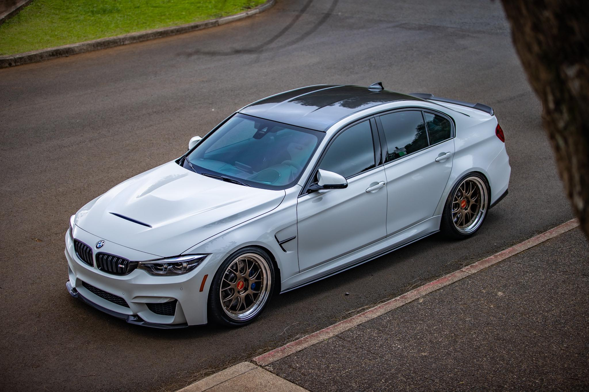

Tipo de sobrealimentação: Turboalimentado (Twin-Turbo)
Potência máxima: 431 cv (versão padrão) / até 510 cv na versão M3 Competition
Torque máximo: 550 Nm (versão padrão) / até 650 Nm na versão M3 Competition
Aceleração (0-100 km/h): Aproximadamente 4,1 segundos (com transmissão DCT, versão Competition chega a 3,9 segundos)
Velocidade máxima: 250 km/h (limitada eletronicamente)
Manual de 6 marchas ou DCT (Dual Clutch Transmission) de 7 marchas
Tração: Traseira (RWD)
Suspensão e Chassi
Tipo de transmissão: Manual de 6 marchas ou DCT (Dual Clutch Transmission) de 7 marchas
Tração: Traseira (RWD)
STAGE 3

1. Turbos
Turbos Garrett GTX3582R ou GTX3076R: Esses são turbocompressores de alto desempenho que substituem os turbos de fábrica. Eles oferecem maior fluxo de ar, o que é necessário para alcançar os níveis de potência desejados (700 cv).
Turbos BorgWarner S200 ou S300: Outra opção popular para um upgrade de turbo, com maior capacidade de fluxo de ar e maior pressão de turbo.
2. Intercooler
Intercooler Wagner Tuning ou CSF Racing: Intercoolers de alta performance, geralmente mais largos e com maior capacidade de resfriamento, são necessários para reduzir a temperatura do ar comprimido vindo dos turbos. Isso permite uma maior densidade de oxigênio e, portanto, mais potência.
3. Injeção de Combustível
Injetores Bosch EV14 1000cc ou 1300cc: São injetores maiores, necessários para fornecer a quantidade de combustível adequada para o motor modificado, especialmente quando a potência é aumentada para 700 cv.
Bomba de combustível Walbro 450lph ou 525lph: Bomba de combustível de alta capacidade que garante que o sistema de combustível possa fornecer combustível suficiente para os injetores.
4. Sistema de Exaustão
Downpipe em aço inoxidável ou Titanium (VRSF ou Akrapovič): O downpipe é uma peça crítica para liberar o fluxo de gases do motor. Um downpipe de maior diâmetro, sem catalisador ou com catalisador de alto fluxo, reduz a restrição e melhora a performance.
Sistema de exaustão completo Akrapovič ou Armytrix: Um sistema de exaustão de alto desempenho, muitas vezes em titânio, que não só aumenta a potência ao melhorar o fluxo de gases, mas também reduz o peso.
5. Valvetrain e Componentes Internos
Pistões CP-Carrillo ou Mahle Motorsport: Pistões forjados de alta resistência para suportar as pressões mais altas geradas pelo turbo de maior capacidade.
Bielas forjadas Manley ou Carillo: Bielas de alta performance que suportam a alta carga de torque gerada pelo motor em 700 cv.
Tuchos de válvulas reforçados (BC Racing, Supertech): Tuchos de válvulas reforçados para suportar a pressão extra e evitar danos em altas rotações.
Molas de válvula de alta performance (Supertech ou BC Racing): Molas de válvula mais fortes para evitar o flutter (abatimento) das válvulas em rotações mais altas.
6. Sistema de Ar e Filtro
Filtro de ar BMC ou Eventuri: Filtros de ar de maior fluxo, que permitem que o motor respire melhor e receba mais ar, o que é necessário para suportar a maior capacidade de fluxo do turbo.
Kit de admissão de ar Eventuri ou aFe Power: Kits de admissão de ar mais eficientes, que melhoram o fluxo de ar para os turbos, ajudando a maximizar a potência.
7. Radiadores e Resfriamento
Radiador Mishimoto ou CSF Racing: Radiadores de alta performance para garantir que a temperatura do motor e do óleo permaneçam dentro dos limites seguros, mesmo sob grande pressão.
Cooler de óleo CSF ou Mishimoto: Sistemas de resfriamento de óleo para garantir que a temperatura do óleo não suba muito, prevenindo o superaquecimento.
8. ECU e Remapeamento
Software de Remapeamento (EcuTek, Bootmod3, Cobb Tuning): Após a instalação de todas as peças, a ECU precisa ser remapeada. Ferramentas como Bootmod3 ou Cobb Tuning são usadas para realizar o remapeamento, permitindo otimizar os parâmetros da injeção de combustível, turbo, ignição, etc.
9. Sistema de Combustível
Rail de combustível de maior capacidade (Fuel Lab ou Radium Engineering): Para fornecer combustível suficiente aos injetores modificados.
Regulador de pressão de combustível (Radium Engineering ou Fuel Lab): Controla a pressão de combustível para garantir que seja a ideal para o desempenho do motor.
10. Componentes de Transmissão e Diferencial
Embreagem reforçada (Clutch Masters ou SPEC): A embreagem de alta performance é necessária para lidar com o aumento de torque. A embreagem Clutch Masters ou SPEC oferece uma solução robusta para suportar 700 cv.
Diferencial de deslizamento limitado (LSD) BMW Performance ou OS Giken: O LSD de alta performance distribui o torque de forma mais eficaz entre as rodas, ajudando a melhorar a tração e o desempenho em altas potências.
Resultado Final:
Com todas essas modificações, a BMW M3 F80 Stage 3 pode alcançar cerca de 700 cv, com uma aceleração que pode cair para cerca de 3,5 segundos de 0-100 km/h e uma velocidade máxima que pode ultrapassar facilmente os 300 km/h, dependendo do setup.
.